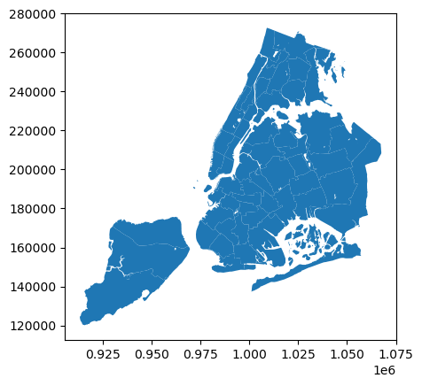
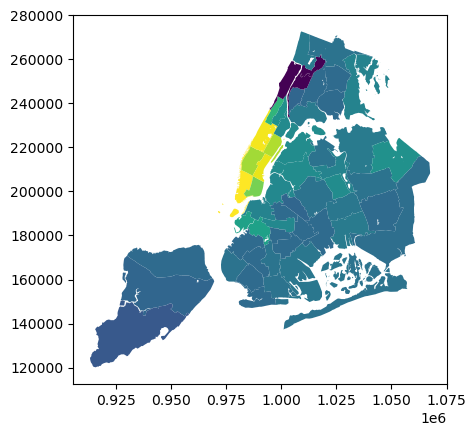

This page was generated from notebooks/07_std_anchor.ipynb.
Interactive online version:

Introduction to mapclassify¶
mapclassify implementsbins = [ ybar + trim * ystd for trim in range(-2, 2+1) ] a family of classification schemes for choropleth maps. Its focus is on the determination of the number of classes, and the assignment of observations to those classes. It is intended for use with upstream mapping and geovisualization packages (see geopandas and geoplot for examples) that
handle the rendering of the maps.
In this notebook, the basic functionality of mapclassify is presented.
[1]:
import mapclassify as mc
mc.__version__
[1]:
'2.4.2+55.g0155c6e6.dirty'
[2]:
import geopandas as gpd
[3]:
gdf = gpd.read_file("data/nyc/nyc.shp")
[4]:
gdf.plot()
[4]:
<AxesSubplot: >

[5]:
gdf.plot(column='rent2008')
[5]:
<AxesSubplot: >

[6]:
std = mc.StdMean(gdf.rent2008)
std
[6]:
StdMean
Interval Count
--------------------------
[ 0.00, 68.04] | 3
( 68.04, 662.61] | 0
( 662.61, 1851.75] | 45
(1851.75, 2446.32] | 2
(2446.32, 2900.00] | 5
[8]:
stda = mc.StdMean(gdf.rent2008, anchor=True)
stda
[8]:
StdMean
Interval Count
--------------------------
[ 0.00, 68.04] | 3
( 68.04, 662.61] | 0
( 662.61, 1257.18] | 33
(1257.18, 1851.75] | 12
(1851.75, 2446.32] | 2
(2446.32, 2900.00] | 5
[7]:
y = gdf.rent2008
y.mean()
[7]:
1257.1818181818182
[9]:
y1 = y.values
y1[0] = 5000
[10]:
mc.StdMean(y1)
[10]:
StdMean
Interval Count
--------------------------
( -inf, -227.42] | 0
(-227.42, 551.24] | 3
( 551.24, 2108.58] | 45
(2108.58, 2887.24] | 5
(2887.24, 5000.00] | 2
[11]:
mc.StdMean(y1, anchor=True)
[11]:
StdMean
Interval Count
--------------------------
[ 0.00, 551.24] | 3
( 551.24, 1329.91] | 35
(1329.91, 2108.58] | 10
(2108.58, 2887.24] | 5
(2887.24, 3665.91] | 1
(3665.91, 4444.57] | 0
(4444.57, 5000.00] | 1
[12]:
y1.mean()
[12]:
1329.909090909091
[17]:
z.min()
[17]:
-2.1144409159637743
[18]:
y.mean() - 2 * y.std()
[18]:
68.04306411189191
[19]:
(2446.321 - y.mean()) / y.std()
[19]:
2.0000007194253047
[20]:
min(z), max(z)
[20]:
(-2.1144409159637743, 2.7630386718042783)
[21]:
y.mean()
[21]:
1257.1818181818182
[23]:
list(map(int, (min(z), max(z))))
[23]:
[-2, 2]
[24]:
ybar = y.mean()
ystd = y.std()
[25]:
bins = [ ybar + trim * ystd for trim in range(-2, 2+1) ]
[26]:
bins
[26]:
[68.04306411189191,
662.6124411468551,
1257.1818181818182,
1851.7511952167815,
2446.3205722517446]
[27]:
int(-2.1)
[27]:
-2
[28]:
int(2.1)
[28]:
2
[ ]: